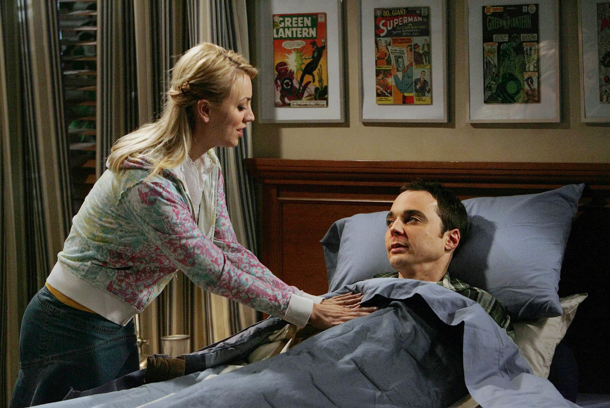
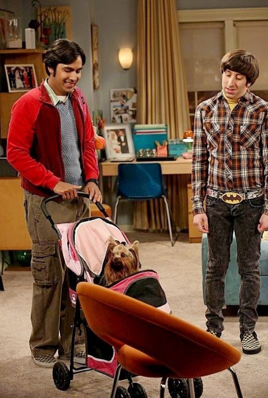
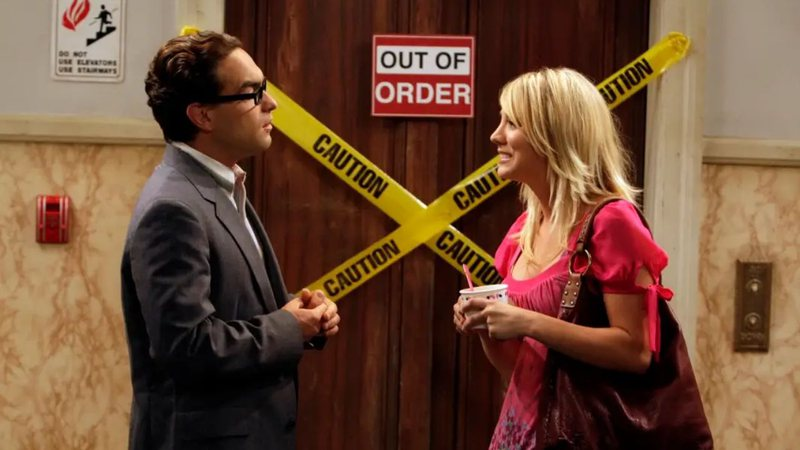
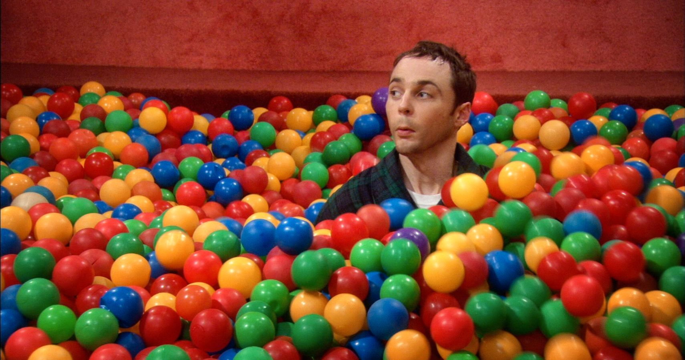
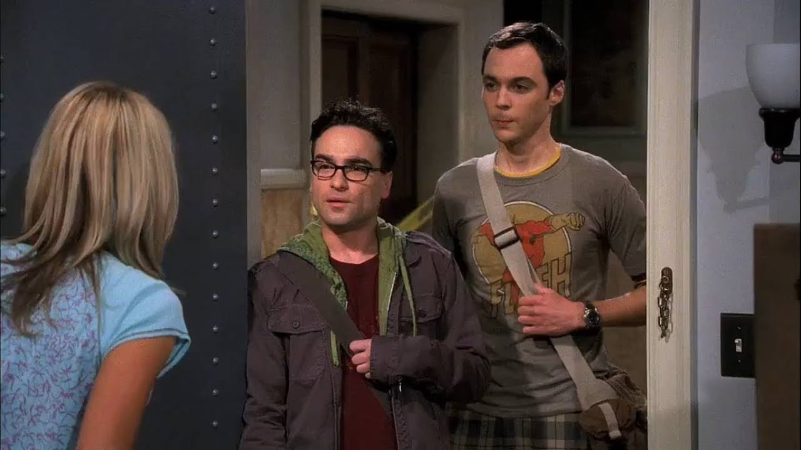

Descubra o quanto você sabe
sobre:
Iniciar Quiz
1 - Quantas temporadas tem The Big Bang Theory?
15 Temporadas11 Temporadas
10 Temporadas
12 Temporadas

Gatinho Pequeno
Gatinho Macio
Gatinho Branquinho
2 - Qual música Penny costuma cantar a Sheldon quando ele está doente?
Gatinho fofoGatinho Pequeno
Gatinho Macio
Gatinho Branquinho

Estrela
Canela
Princesa
3 - Qual é o nome da pequena cachorrinha de Raj?
StellaEstrela
Canela
Princesa

7° Temporada
8° Temporada
Última Temporada
4 - Em qual temporada o elevador do prédio de Sheldon foi concertado?
Nenhuma7° Temporada
8° Temporada
Última Temporada

Bazinga!
Ah esta foi boa!
Amén
5 - O que Sheldon sempre diz após fazer uma piada?
TarânBazinga!
Ah esta foi boa!
Amén
6 - Qual era o emprego da Penny no começo da série
Garçonete na fábrica do cheescakeRepresentante de vendas
Atriz
Desempregada
7 - Qual era o único personagem que não tinha namorada?
LeonardSheldon
Rajesh
Howard

"Nossos filhos serão lindos e inteligentes"
"Cara, como ela é gata!"
"Um upgrade em relação a antiga vizinha"
8 - O que Leonard disse quando conheceu a Penny?
"Vou me casar com essa mulher""Nossos filhos serão lindos e inteligentes"
"Cara, como ela é gata!"
"Um upgrade em relação a antiga vizinha"
9 - Qual número Sheldon considera perfeito?
1373
33
22
10 - Qual animal Sheldon encontra em sua janela?
PombaGaio Azul
Pica Pau
Beija-Flor
Resultado: